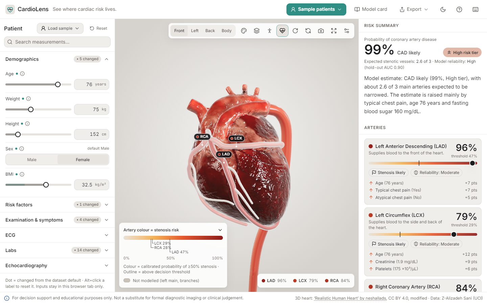
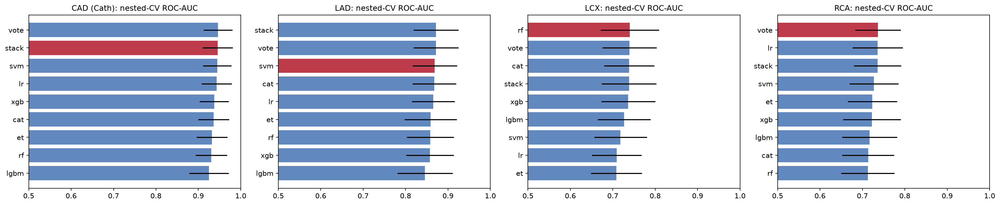
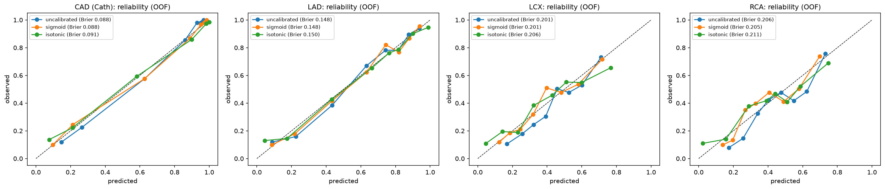
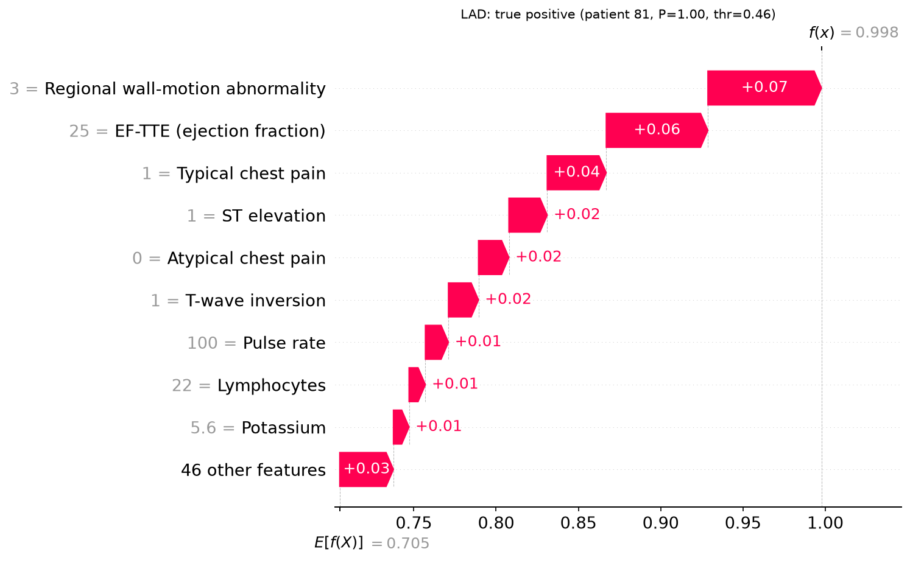

CardioLens takes the 55 routine clinical measurements of one patient (demographics, examination, ECG, labs and
echocardiography) and returns a calibrated probability of coronary artery disease (CAD) plus a calibrated
probability of ≥50% stenosis in each of the LAD, LCX and RCA. Each probability is painted onto the matching
artery of an interactive 3D heart. The dashboard beside the canvas explains every estimate with SHAP
values, shows each measurement next to its contribution, and updates live as inputs change. A non-dismissible
banner states that the tool is for decision support and education only.

Figure 1. The app with the "High risk · multi-vessel" hold-out sample. Left: the patient inputs, grouped and auto-generated from the schema.
Centre: the 3D heart, each coronary coloured by its calibrated probability and outlined when above its decision threshold.
Right: the CAD summary, artery cards with reliability badges, and the top drivers in probability points.
Requirement (problem statement)
Where it is met
1a–e Models, leakage rule, metrics
§3: four calibrated models; Cath, LAD, LCX and RCA are never inputs (asserted before every fit, and rejected by the API with HTTP 400); accuracy, precision, recall, F1 and ROC-AUC with 95% CIs.
2a–c Interactive 3D heart, colour by probability, rotate/zoom/select
§5: React Three Fiber viewer; LAD/LCX/RCA meshes coloured from the API scene state; orbit, zoom, click an artery for its detail card.
3a–c Dashboard, SHAP breakdown, measurements with contribution
§4: risk summary and artery cards beside the canvas; SHAP waterfall per target; table of measurements with reference range and contribution.
4 Open-source meshes
"Realistic Human Heart" by neshallads (Sketchfab, CC BY 4.0), modified; Poly Haven CC0 HDRI.
5 Clinical safety disclaimer
Persistent banner on every screen, in every API response and on every page of the PDF export.
2. Dataset and preprocessing
Data. Extension of Z-Alizadeh Sani (UCI id 411, DOI 10.24432/C5Q31M): 303 patients from one centre in Tehran,
55 clinical features and four binary targets. Positive rates: CAD (Cath) 71%, LAD 58%, LCX 39%, RCA 38%. There are no
missing values or duplicates, and nothing was relabelled. Exertional CP is constant and was dropped.
Figure 2b. Co-occurrence: disease is often multi-vessel (73 patients have both LCX and RCA).
Label logic: every one of the 216 CAD patients has ≥ 1 stenotic vessel (86 one-vessel, 67 two-vessel, 63 three-vessel). One "Normal" patient has a recorded stenotic vessel; it was kept as recorded, never relabelled. This structure motivated testing a hierarchical vessel strategy (§3).
Physiological sanity checks: 0 values outside plausible ranges for EF, K, Na, Hb, BP, pulse, BMI and creatinine; recomputed BMI matches exactly; neutrophils + lymphocytes never exceed 100%. Extreme but clinically possible labs (FBS 400, TG 1050, platelets 25) were kept.
Skewness: TG (3.8), platelets (2.6), FBS (2.3) and BUN (1.8) are strongly right-skewed, which is why linear and SVM models get a log1p transform. The EDA describes all 303 rows; the only choices taken from it (these transforms and the constant-column drop) do not use the labels.
Encoding (deterministic)
Y/N flags → 1/0; Sex → binary; BBB → one-hot.
VHD, Function Class and Region RWMA → ordinal.
Linear and SVM models also get log1p on skewed labs and standardisation, and drop weight, height and obesity (collinear with BMI).
No leakage by construction. Every step above is a fitted scikit-learn transformer inside the model pipeline,
so it is re-fitted inside each training fold and never sees validation or hold-out rows. The four label columns
(Cath, LAD, LCX, RCA) are excluded from every model's inputs, and an assertion checks this before every fit.
3. Models and evaluation
Validation design
Hold-out: a stratified 20% test set (n = 61, seed 42), used exactly once at the end. Training set n = 242.
Model selection: repeated stratified 5×5 cross-validation on the training set, with nested Optuna tuning (inner 3-fold, 30 trials). All preprocessing runs inside the folds.
Thresholds: each target's decision threshold is the F1-optimal cut-off on pooled out-of-fold predictions: CAD 0.195, LAD 0.465, LCX 0.29, RCA 0.275.
Uncertainty: hold-out 95% CIs from 1,000 stratified bootstrap resamples.
Model architecture
Nine model families were compared for every target: logistic regression (ElasticNet), RBF-SVM, random forest,
ExtraTrees, LightGBM, XGBoost, CatBoost, and soft-vote and stacking ensembles of the top three diverse families.
Three ways to model the vessels were also compared: A independent, B classifier chain, and C hierarchical
P(CAD)·P(vessel | CAD). Strategy A was kept: it matched B (paired ΔAUC +0.002 ± 0.007) and beat C (−0.011 ± 0.019)
while staying simpler. Every final model is calibrated with sigmoid (Platt) scaling, which gave the lowest
expected calibration error (CAD ECE 0.033).
Feature selection (inside the folds only)
For each target we compared all 68 features against SHAP top-k subsets (k = 10, 15, 20, ranked by mean |SHAP| of a
small LightGBM fitted on each fold's training part) and L1-logistic selection, and kept the smallest set within
0.01 AUC of the best. CAD and LAD keep all features (subsets lost 0.01–0.02 AUC); LCX uses SHAP top-15
(0.741 vs 0.747) and RCA SHAP top-10 (0.748, the best variant). No SMOTE was needed.
Ablation (nested-CV AUC, each step adds one component)
Step
CAD
LAD
LCX
RCA
1 raw encoded features
0.921
0.839
0.743
0.746
2 + engineered features
0.933
0.857
0.747
0.745
3 + feature selection
0.933
0.857
0.741
0.748
4 + soft-vote ensemble
0.944
0.867
0.740
0.734
Engineered features help most (CAD +0.012, LAD +0.018). Gains for LCX and RCA are within noise, so the final vessel models stay simple. Source: artifacts/ablation.json.

Figure 3. Nested-CV ROC-AUC (mean ± SD over 25 outer folds) for every family and target; red marks the selected model. The ranking gaps are small relative to the spread, so the simplest model in the top group was preferred where possible.
Target
Selected model
Nested-CV AUC
Hold-out AUC [95% CI]
Accuracy
Precision
Recall
F1 [95% CI]
Brier
CAD
stack (SVM + LR + XGB)
0.945 ± 0.036
0.895 [0.806, 0.966]
0.852
0.827
1.000
0.905 [0.869, 0.945]
0.118
LAD
RBF-SVM
0.869 ± 0.053
0.832 [0.725, 0.930]
0.754
0.721
0.912
0.805 [0.734, 0.877]
0.166
LCX
random forest (SHAP top-15)
0.740 ± 0.069
0.768 [0.647, 0.878]
0.672
0.568
0.962
0.714 [0.641, 0.788]
0.193
RCA
vote (LR + SVM + ET, SHAP top-10)
0.737 ± 0.054
0.741 [0.598, 0.868]
0.623
0.459
0.850
0.596 [0.491, 0.702]
0.191
Hold-out metrics (n = 61) at the out-of-fold thresholds above. Specificity: CAD 0.50, LAD 0.56, LCX 0.46, RCA 0.51. All values come from artifacts/metrics.json.

Figure 4. Out-of-fold reliability curves before and after calibration. The CAD and LAD curves sit on the diagonal, so a displayed "80%" means about 8 in 10 similar patients had the disease. LCX and RCA are noisier, which the app reflects in its reliability badges.
Reading the results honestly. CAD is predicted well (hold-out AUC 0.90) and LAD reasonably (0.83). LCX
(0.77) and RCA (0.74) are only moderate: the dataset has no lesion location and just 303 patients, and the wide CIs
reflect a 61-patient hold-out. The thresholds favour sensitivity (CAD recall 1.00 on hold-out) at the cost of
specificity, which suits a triage aid but would need recalibration for screening populations with lower prevalence.
4. Clinical interpretability
Feature attribution. Exact TreeSHAP and LinearSHAP are computed for each ensemble member and propagated
through the ensembling, the calibration and the vessel models. Results are expressed in probability points
("+7 pts") rather than log-odds, then mapped from engineered features back to the 55 raw clinical inputs and to six
physiological groups (demographics, risk factors, symptoms, ECG, labs, echo). As a cross-check, LIME agrees with SHAP
on 3.1 of the top-5 features on average. A full prediction with explanations for all four targets takes
149 ms (p95 150 ms) on CPU.
Clinical sanity and stability. The top drivers make medical sense: typical chest pain, ejection fraction, age,
fasting blood sugar and hypertension for CAD; chest pain, regional wall-motion abnormality and EF for LAD; diabetes
and age for RCA. Refitting on the outer folds of two CV repeats gives stable ranks (typical chest pain: mean rank 1.2 ± 0.4
for CAD and 1.1 ± 0.3 for LAD; age: 1.0 ± 0.0 for LCX). False negatives are mostly silent or atypical presentations
(no typical chest pain, normal ECG, preserved EF), the same cases clinical pretest scores miss.

Figure 5. SHAP waterfall for one hold-out LAD true positive: the estimate climbs from the base rate (0.71) to 0.998, driven by regional wall-motion abnormality, low ejection fraction and typical chest pain. The app shows the same chart per patient.
What the dashboard shows
Risk summary: CAD probability, risk tier (Low < 0.08 ≤ Moderate < 0.82 ≤ High, chosen so ≤ 5% of CAD patients land in Low), expected number of stenotic vessels, and a one-sentence plain-language explanation.
Artery cards: probability, threshold, "Stenosis likely" flag, a reliability badge derived from hold-out AUC (High / Moderate / Limited), and the top three drivers.
Why? panel: SHAP waterfall for the selected target and the group breakdown.
Measurement table: each value next to its typical adult reference range and its signed contribution, sortable by contribution.
What-if: change only modifiable factors (BP, LDL, HDL, TG, FBS, smoking, weight, DM, HTN, DLP). A toast reports the change ("Hypertension → No: CAD ↓21 pts"), labelled as a model-estimated association, not a treatment effect.
Model card: the metrics table with CIs, calibration, and the limitations below.
5. 3D pipeline and system architecture
Prediction → anatomy mapping
A pure function, scene_state(prediction), turns model output into a render-ready scene (≈0.3 ms,
validated against a JSON schema). Prediction keys map one-to-one onto the meshes Coronary_LAD,
Coronary_LCX and Coronary_RCA, which are the only risk-coloured structures. Every mesh name,
colour and tooltip lives in a single anatomy_map.json.
Colour = probability, on one shared sequential scale for all vessels (#E8E2D8 → #F2B45A → #E4572E → #8E1B1B, interpolated in CIELAB, lightness L* 90 → 31). It reads correctly in greyscale and for colour-blind users, and equal colours mean equal risk.
Flag = decision. Being above a vessel's own threshold is shown by a separate non-colour cue: an outline, a pulse and a "Stenosis likely" badge.
No anatomical over-claiming. The dataset says only "≥ 50% stenosis somewhere in the vessel", so each artery is coloured uniformly along its whole length. The left main and side branches stay neutral ("not modelled"). Region RWMA is a model input, never a lesion map; a test enforces that no feature picks a vessel or a location.
Optional overlays: AHA 17-segment perfusion territories (right-dominant, Cerqueira 2002) and a body mode that shows where contributing factors live (lungs, kidneys, blood…), explicitly labelled "not the location of disease".
3D asset pipeline
The source is the Sketchfab model "Realistic Human Heart" by neshallads (CC BY 4.0). A headless Blender 5.2 script
(python blender/make_all.py, about 5 minutes) re-aligns it to the anatomical long axis, scales it to a
12 cm base-to-apex length and splits it into parts. It then traces the painted coronaries on a cylindrical unwrap,
using minimum-cost paths inside the anatomical grooves, and sweeps new continuous tubes 1.5–2 mm above the surface.
It also generates the territory meshes, invisible 6 mm picking proxies, outline shells, camera anchors and a
"Clinical" texture variant (KHR_materials_variants). Output is Draco-compressed with WebP textures.
File
Triangles
Size
Use
heart.glb
108,326
1.58 MB
desktop
heart_lite.glb
45,938
0.60 MB
chosen automatically on mobile, low-memory devices, or when the frame rate drops
System architecture
Figure 6. Data flows one way, from the frozen ML package to the 3D view. The UI holds no clinical data of its own: the input form, ranges, colours and texts all come from the API or the anatomy map, and a guard script fails the build if the frontend duplicates them.
149 ms/predict p95, with SHAP for all 4 targets
94 / 100 / 100Lighthouse: performance, accessibility, best practices
128 KBinitial JS (gzip); 3D stack lazy-loaded
≈59 fpsorbiting, full and lite model (vsync-capped)
Performance without a dedicated GPU. The viewer renders on demand (no frames while idle), caps the device
pixel ratio (1.75, or 1.25 in lite), uses no real-time shadows, and switches to the 46k-triangle lite model
automatically. The frame-rate figures above were measured on our development machine. Integrated graphics were not
available to us, so that case is covered by these design choices rather than by a measurement.
Extensibility. A new clinical feature is added in cardio_ml/config.py and appears in the
form automatically through /api/schema. A new model is registered in cardio_ml/models.py;
the API and UI are model-agnostic. A new anatomical structure needs an entry in anatomy_map.json
and a mesh with the same name in the GLB; the viewer binds by name.
Windows, one click: double-click Start CardioLens.bat. It builds if needed, serves at http://localhost:8000 and restarts itself on a crash.
Any OS:python scripts/build.py then python -m app.backend.main.
Docker:docker build -t cardiolens . then docker run -p 8000:8000 cardiolens.
Development:python scripts/dev.py (API :8000 + Vite :5173).
Workflow
Click Sample patients and pick one (all are de-identified hold-out patients), or enter values in the left panel.
Rotate and zoom the heart; hover an artery for its probability; click it to open its card and explanation.
Keys: 1/2/3 views, B body mode, T territories, ? all shortcuts.
Change any input to see the result update; use What-if to explore modifiable factors.
Export a PDF report, a PNG or a text summary.
Reproduce and test
Retrain (seeded; writes artifacts/): place the UCI dataset in data/ and execute notebooks/track_a_ml.ipynb (CARDIO_FAST_MODE=1 for a quick run). Rebuild the 3D asset: python blender/make_all.py.
Tests: 49 pytest (ML, mapping, API), 22 Vitest (UI) and 34 Playwright end-to-end tests, including the colour-correspondence check.
7. Limitations and safety
Data: a single-centre referral cohort of 303 patients with 71% CAD prevalence and no external validation. Probabilities will not transfer to screening populations without recalibration.
Anatomy: labels are binary ≥ 50% stenosis per vessel with no lesion location, so CardioLens never shows where in an artery a lesion is. Territories are textbook averages.
Attributions are associations: SHAP and what-if describe the model, not causal effects. Some drivers are likely spurious at this sample size (e.g. height for LCX), and the model card says so.
Safety in the product: a persistent disclaimer, reliability badges on every estimate, the leakage guard in the API, a "Model uncertainty example" in the model card, and patient data kept in memory only (no storage, no analytics).
Disclaimer. CardioLens is for decision support and educational purposes only. It is not a substitute for formal diagnostic imaging or clinical judgement.
Credits. Dataset: Alizadehsani R., Roshanzamir M., Sani Z., Extension of Z-Alizadeh Sani, UCI ML Repository (2017).
3D heart: "Realistic Human Heart" (sketchfab.com/3d-models/realistic-human-heart-3f8072336ce94d18b3d0d055a1ece089) by neshallads, CC BY 4.0; modified (re-aligned, re-scaled, split into parts, coronary tubes and territories added, clinical texture variant added).
HDRI: Poly Haven, CC0. Libraries: scikit-learn, XGBoost, LightGBM, CatBoost, SHAP, LIME, Optuna, FastAPI, React, three.js, React Three Fiber.